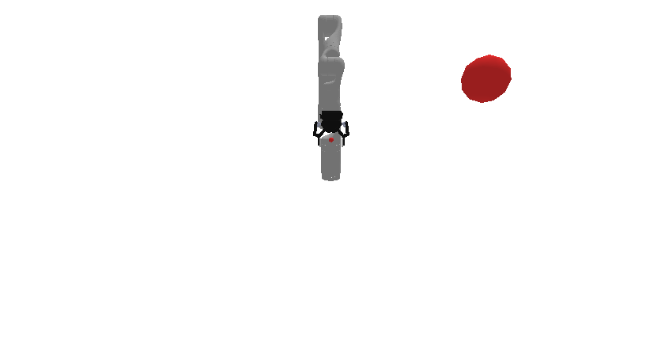

prbench/Motion3D-v0
Random Actions
Initial State Distribution
Environment Group Description
A 3D motion planning environment where the goal is to reach a target sphere with the robot's end effector. The robot is a Kinova Gen-3 with 7 degrees of freedom. The target is a sphere with radius 0.100m positioned randomly within the workspace bounds. The workspace bounds are: - X: [0.0, 0.5] - Y: [0.1, 0.8] - Z: [0.0, 0.5] Only targets that are reachable via inverse kinematics are sampled.
Variant Description
This variant has a specific configuration. See the observation space below for details.
Observation Space
The entries of an array in this Box space correspond to the following object features:
| Index | Object | Feature |
|---|---|---|
| 0 | robot | joint_1 |
| 1 | robot | joint_2 |
| 2 | robot | joint_3 |
| 3 | robot | joint_4 |
| 4 | robot | joint_5 |
| 5 | robot | joint_6 |
| 6 | robot | joint_7 |
| 7 | robot | finger_state |
| 8 | robot | grasp_active |
| 9 | robot | grasp_tf_x |
| 10 | robot | grasp_tf_y |
| 11 | robot | grasp_tf_z |
| 12 | robot | grasp_tf_qx |
| 13 | robot | grasp_tf_qy |
| 14 | robot | grasp_tf_qz |
| 15 | robot | grasp_tf_qw |
| 16 | target | x |
| 17 | target | y |
| 18 | target | z |
Action Space
An action space for a 7 DOF robot that can open and close its gripper.
Actions are bounded relative joint positions and open / close.
The open / close logic is: <-0.5 is close, >0.5 is open, and otherwise no change.
Rewards
The reward structure is simple: - -1.0 penalty at every timestep until the goal is reached - Termination occurs when the end effector is within 0.100m of the target center
This encourages the robot to reach the target as quickly as possible while avoiding infinite episodes.
References
This is a very common kind of environment.